Hello Lamp Post
找到公共物编号发送短信收到回应并接话
路灯、邮筒等既有公共物成为对话起点。参与者发送物件编号，随后收到问题并留下自己的故事；同一地点也能连接不同人的回答。内容跟随人已经在进行的步行活动展开。
可借鉴：孤山的校史线索可以触发内容，现场不必为每件作品增加展位。
边界：借鉴地点关联，不复制短信形式；景区设置入口及使用现有界面仍须取得许可。
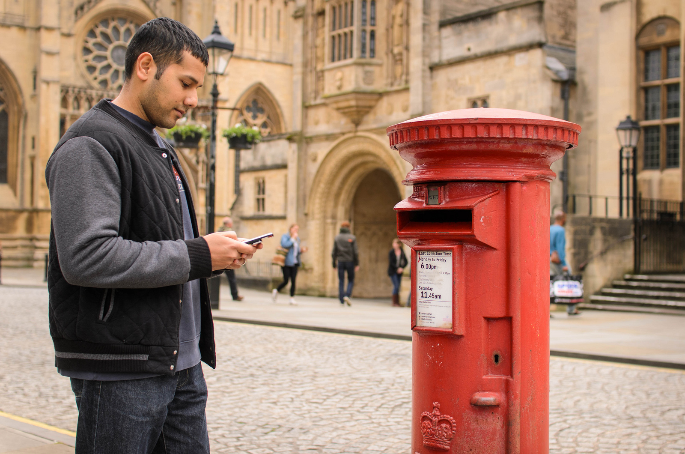
从孤山的历史现场与日常游览出发，让公众发现国美作品、理解创作过程，并在离场后继续观看与交流。
项目以国美文化的持续社会传播为目标。作品库逐步保存历届作品及可获得的灵感、调研、草图与成果；孤山连接学校起源与公众的日常生活。
洞天及各校数字毕业展已有线上展示渠道，本项目继续研究历史现场、过程档案与公众参与之间的联系。国美洞天发布资料
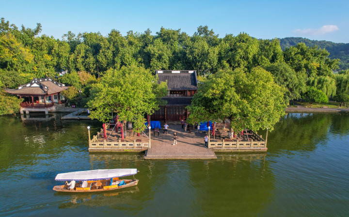
国美文化传播是目的，作品库与空间交互是手段。
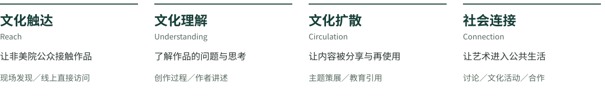
国立艺术院在孤山罗苑创校，今天这里仍有可辨认的校史线索，也有持续使用的景观与文化设施。场地研究先建立这两层认识，再判断新功能怎样进入。
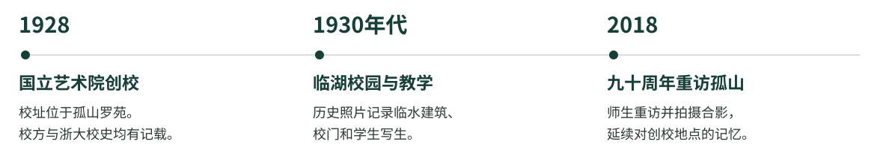
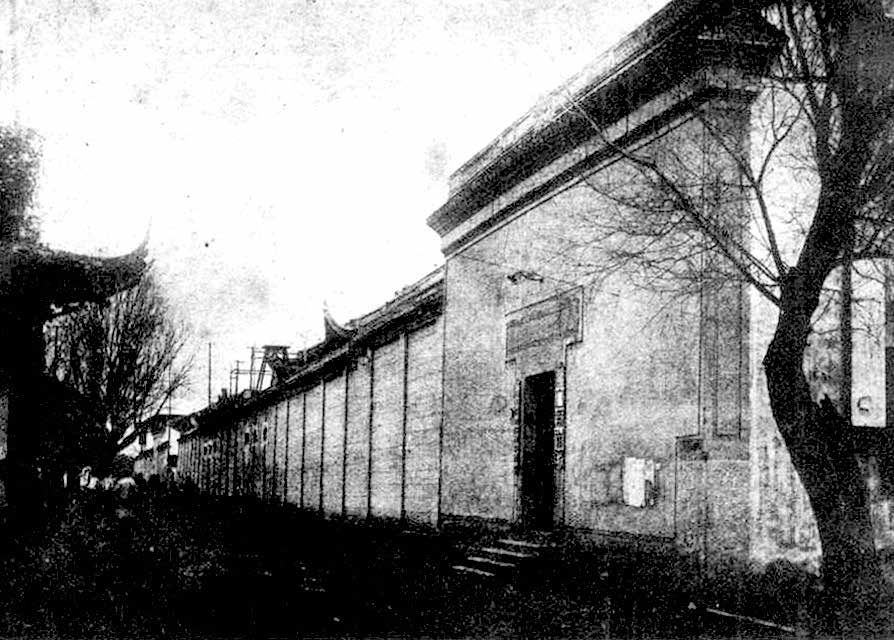
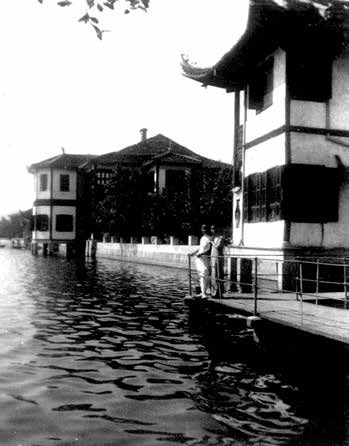
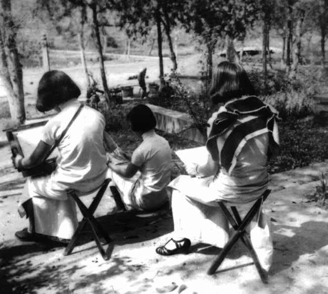
校门、临湖建筑与写生活动，使校史从年份落到具体环境。对本项目而言，这些材料可支持公众理解国美怎样在此学习与创作；当代作品与孤山的联系仍须有真实资料依据。
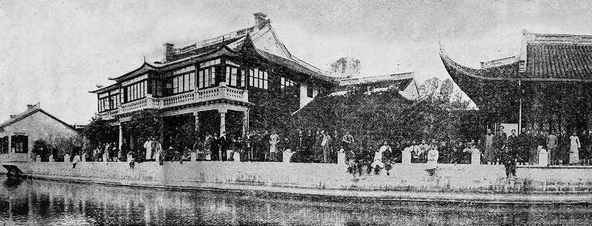
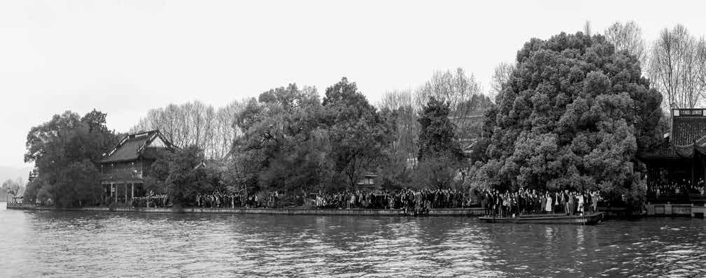
两张图用于对照场地记忆，不是精确的同机位测绘。合影年份另见国美转载稿的1929图注。校方2018年报道可证重访活动，不能直接推出数字作品库的用户意愿。
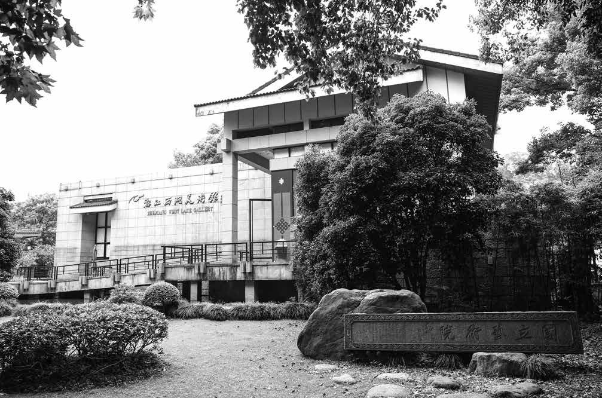
以下旧报道实景帮助识别空间类型。院落、亭廊和馆区已经承载观景、休息、参观等用途，不能直接列为项目可占用的空间。
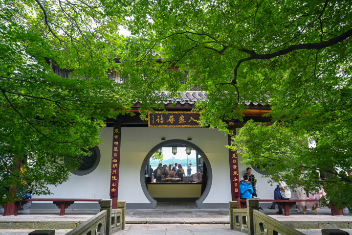
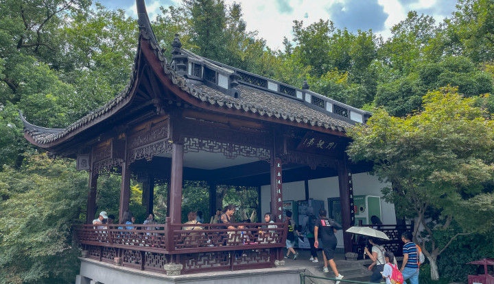
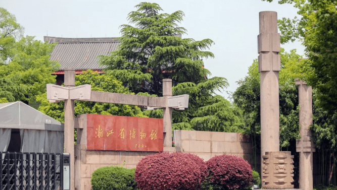
原有景观、通行、休憩及文化参观，是空间设计底线。
资料：中国美术学院《访石记》、浙江大学《话说罗苑》、浙大档案馆：罗苑历史、国美九十周年重访孤山、潮新闻：平湖秋月维护恢复、孤山公共服务驿站开站、西湖总体规划批复、杭州发布：馆区开放调整、掌上西湖AR实践
历史罗苑不等同于现有可建用地；1956/1959年沿革叙述、历史合影1928/1929图注差异继续保留。场地照片用于辨认，当前开放条件与可用范围另行核查。
使用者既包括路过的公众，也包括有明确作品目标的毕业生和创作者。六类角色可以重叠，同一人也会在短看、细读和共同交流之间转换。
| 用户 | 原始目的 | 作品目标 | 本项目应支持的行为 | 空间需求 |
|---|---|---|---|---|
| A 普通游览者 | 游湖、拍照、休息 | 通常未预设 | 自愿发现，也可不参与 | 不阻路、不占景、能退出 |
| B 文化参观者 | 看展、了解历史 | 从宽泛到具体 | 历史辨认、主题探索 | 真实对象可对照、能短停 |
| C 历届毕业生 | 重访、带人看作品 | 指定作者／作品 | 快速找回、讲述与分享 | 可与同行者共同观看 |
| D 同行者 | 陪伴、了解朋友 | 随讲述形成 | 看、听、指认、提出理解 | 共同视野与交谈条件 |
| E 学生与创作者 | 学习、研究、找灵感 | 主题／资料明确 | 检索、比较过程、维护档案 | 阅读条件；深检索可异地 |
| F 内容及运营主体 | 传播、服务、管理 | 按职责确定 | 审核、更新、维护、协作 | 责任与服务条件明确 |
功能取舍采用以下区分：
具体动机、操作偏好和持续参与强度是研究推断，尚非问卷或访谈结果。行动、视听、语言能力及是否同行，是横跨全部角色的使用条件。
持续参与还取决于具体内容和后续关系：
线下优先承担历史认知与艺术发现。阅读、共同观看和交流需要适配的停留条件；深度媒介体验及活动按场地和管理条件确定。线上作品库与现场共享内容，但可以独立访问。
孤山不承担历届作品全量实体陈列。
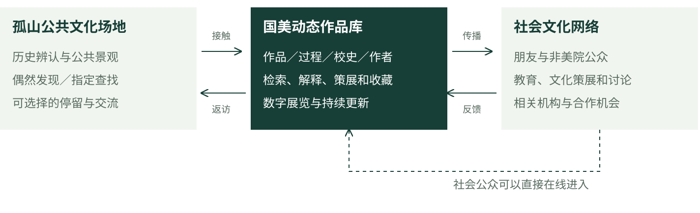
| 层级 | 主要任务 | 线下职责 | 线上职责与当前取舍 |
|---|---|---|---|
| F0 公共基底 | 保留既有公共生活 | 观景、通行、休憩、参观、同等可达 | 独立成立，不依赖数字参与 |
| F1 历史认知 | 认识国美起源 | 真实对象辨认，现场与历史对照 | 历史档案延伸；优先深化 |
| F2 艺术发现 | 偶然发现／直接寻找 | 可选入口、作品预览与寻找条件 | 主题召回、指定检索；优先深化 |
| F3 理解与交流 | 理解思想与创作选择 | 可停留、可共同看、可交谈 | 完整过程、作者讲述、回应；比较空间增益 |
| F4 深度体验 | 特定媒介与文化活动 | F4a受控媒介；F4b专题活动 | 虚拟内容独立访问；现场部署有条件 |
| F5 传播连接 | 让内容进入社会 | 公共交流、活动与文化接触 | 故事分享、专题、教育引用、合作；必须支持 |
| M 运营支撑 | 使全部功能可持续 | 场地、设备、开放与维护责任 | 收录、授权、审核、更新与反馈；必要条件 |
F0—F5与M是功能层级，不对应七个房间。F5传播能力贯穿全部内容，主要由线上与社会网络承接。
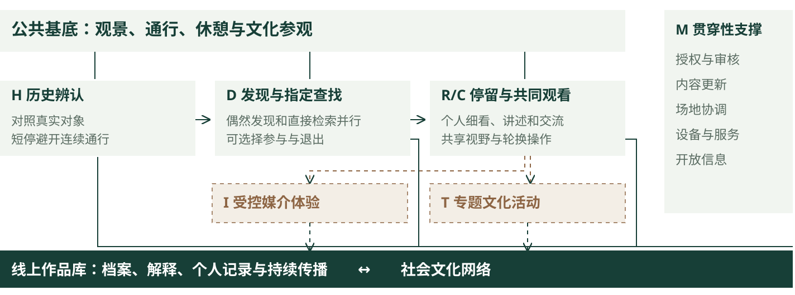
| 行为 | 人体与社交关系 | 环境要求 | 承载原则 |
|---|---|---|---|
| 游览与观景 | 行走、停步、拍照互不挤占 | 视线与通行连续 | 保留原有用途 |
| 历史辨认 | 看信息并对照真实对象 | 可见、可读、有短停位置 | 先核现有解说缺口 |
| 偶然发现 | 自愿接近，随时能离开 | 低干扰，不强迫排队 | 直接进入具体内容 |
| 指定查找 | 目标明确，快速确认 | 避免占用唯一公共界面 | 个人访问与适配界面并行 |
| 作品细读 | 站坐切换、放大与比较 | 细节可读、控制反光 | 利用可停留条件 |
| 共同观看 | 共同看见、指认、交谈、轮流操作 | 同等可达，不阻旁人 | 比较多种媒介，先不定大屏 |
| 受控媒介体验 | 佩戴、等候、交接、退出 | 安全边界与管理服务 | 条件满足后再部署 |
| 文化活动 | 聚集、发言、布撤与恢复 | 声环境与时段兼容 | 基于获准使用条件 |
共同观看要解决的是同一内容是否看得见、能否指认、如何轮流操作和交谈。现阶段不直接选择大屏、同步手机或固定头显房间，也不填写未经测量的面积与观看距离。
| 比较项 | A 既有设施整合 | B 已有空间轻型更新 | C 独立可逆构件 |
|---|---|---|---|
| 支持行为 | 历史识别、短发现与快捷访问 | 停留、阅读、交流；有条件的体验 | 弥补明确而尚未承接的行为需求 |
| 公共使用 | 已有设施可能正在满负荷使用 | 需确认原用途与可共用时段 | 安装与停留范围不能挤占通行 |
| 历史对象 | 附着方式可能影响本体与解读 | 空间使用和更新均需协调 | 独立可逆也可能影响景观与地下条件 |
| 维护需求 | 内容更新、载体检查 | 环境、保洁、设备与人员 | 设施维护、收纳、修复与撤除 |
| 使用许可 | 需取得设施与内容使用同意 | 需核空间、管理与开放条件 | 需明确设置、管理及恢复要求 |
| 可逆性 | 须按具体连接方式判断 | 小更新也未必容易恢复 | 以可恢复为设计目标，仍待证明 |
| 本轮取舍 | 首先检查是否足以承接需求 | 重点调查可停留与交流条件 | 仅在必要行为无法被A/B承接时深化 |
三种方式可以组合。既有设施上的附着可能影响历史本体，独立可逆构件也可能影响景观和地下条件，不能仅按“新增多少”排列风险。
以下矩阵比较两项活动在同一有限空间或时段内的争用。冲突：需先化解冲突；协调：满足条件可共存；兼容：无明显内在冲突。它是设计推断，现场资料取得后再校准。
| P通行 | V观景 | H历史 | D查找 | R细读 | C共看 | I沉浸 | T活动 | M维护 | |
|---|---|---|---|---|---|---|---|---|---|
| P通行 | — | 协调 | 协调 | 协调 | 冲突 | 冲突 | 冲突 | 冲突 | 协调 |
| V观景 | 协调 | — | 兼容 | 协调 | 协调 | 协调 | 冲突 | 冲突 | 协调 |
| H历史 | 协调 | 兼容 | — | 兼容 | 兼容 | 协调 | 协调 | 协调 | 协调 |
| D查找 | 协调 | 协调 | 兼容 | — | 协调 | 协调 | 冲突 | 协调 | 协调 |
| R细读 | 冲突 | 协调 | 兼容 | 协调 | — | 协调 | 协调 | 冲突 | 协调 |
| C共看 | 冲突 | 协调 | 协调 | 协调 | 协调 | — | 协调 | 协调 | 协调 |
| I沉浸 | 冲突 | 冲突 | 协调 | 冲突 | 协调 | 协调 | — | 冲突 | 协调 |
| T活动 | 冲突 | 冲突 | 协调 | 协调 | 冲突 | 协调 | 冲突 | — | 协调 |
| M维护 | 协调 | 协调 | 协调 | 协调 | 协调 | 协调 | 协调 | 协调 | — |
调研重点从“虚拟展厅长什么样”转向“人怎样进入内容、理解作品，并在离场后继续观看”。以下六个案例分别提供地点入口、兴趣发现、参与讨论与访问延续的机制参考。
案例提供具体操作的参照，也呈现内容、服务与维护的条件。孤山是否适用，仍取决于真实的使用需求和场地资料。
路灯、邮筒等既有公共物成为对话起点。参与者发送物件编号，随后收到问题并留下自己的故事；同一地点也能连接不同人的回答。内容跟随人已经在进行的步行活动展开。
可借鉴：孤山的校史线索可以触发内容，现场不必为每件作品增加展位。
边界：借鉴地点关联，不复制短信形式；景区设置入口及使用现有界面仍须取得许可。

用户发送“send me”及一个关键词、颜色或表情，系统返回相关馆藏图片与图注。使用者可以立即获得一件作品及背景信息，不要求先懂艺术分类或输入准确的作品名称。
可借鉴：先交给游客一件有信息的作品，再提供换一件、深入阅读和检索入口。
运行教训：服务于2020年结束，馆方明确提到短信费用与维护负担。作品召回需要内容和标签，轻量入口同样需要持续运行资源。
使用者上传照片或调整色盘，系统从艺术作品中寻找色彩相近的结果。照片可以是一处风景或日常物品。关联依据能够直接看见，生活中的一次观看由此成为接触作品的入口。
可借鉴：游客的西湖照片可以连接一件真实作品，并清楚显示“按色彩关联”等推荐依据。
边界：色彩相近不等于题材相同或创作地相同。主题关联还需要作品资料和人工编辑。
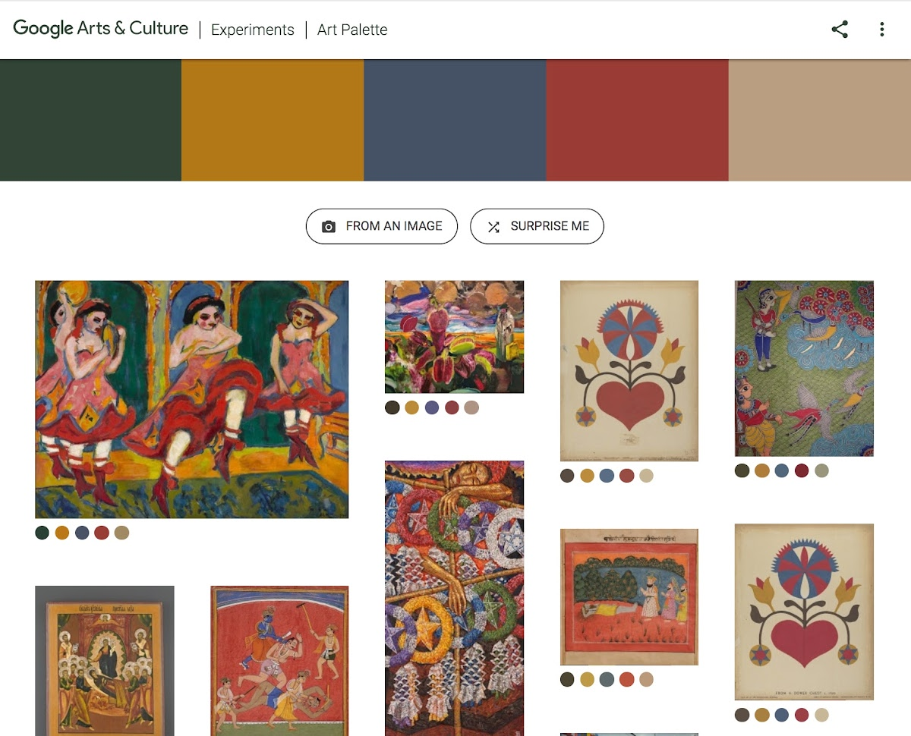
馆方把精选馆藏与创作、调查、交流等交互连接，观众可以主动操作和表达，并通过手机保存参与内容。交互围绕具体作品组织，使技术回应与观看对象保持联系。
可借鉴：从一件作品中找到适合公众参与的问题，让回应重新连接到作品和解释。
边界：部分交互涉及生成式技术，不等于重现原作者决策；专门场馆、人员和技术规模不能直接搬到孤山。
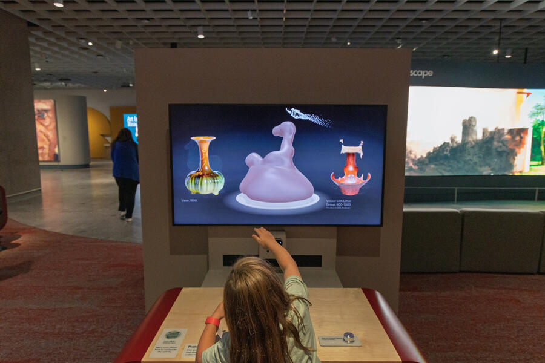
项目利用展厅中的数字界面及线上渠道，邀请观众围绕馆藏和问题表达看法。后来者可以接触已有回应，讨论因而不只发生在观众与展品之间，也发生在不同观众之间。
可借鉴：游客的理解可以成为作品的后续回响，并为同行者或后来者提供新的讨论线索。
边界：需要内容审核与持续管理。评论是独立的公众记录，不能替代作者原始材料；留言多也不等于理解深。
阶段性建议｜具体位置与载体在实地考察后确定
两种交互可以并存：游客可从看风景、拍照进入作品，也可直接参与一个创作选择。两者共用收藏与续看入口，不要求所有人完成同一条路线。
游客在孤山拍下一张照片，或选择一个眼前感兴趣的线索，得到一件有关联的国美作品。先有一次具体发现，再决定是否进入过程档案或虚拟展览。
有来源的历史照片、草图或观察提示，让游客知道这里与国美的关系。
扫码后自愿选择照片、兴趣词或随机遇见，不先要求下载。
显示作品与基本信息，并说明按色彩、主题或其他依据关联。
展开草图、过程或相关展览，也可以换一件或保存后离开。
照片分支先采用可说明的色彩关系或人工主题标签。随机入口保留惊喜，兴趣入口照顾不想使用照片的人；它们共用同一批真实档案。
游客即使不扫码，也应读懂现场的基本内容。愿意深入的人再通过手机进入；现场无需永久摆出历届作品。
取景与内容关联示意
一张风景，连接一件作品
场景图：潮新闻2023年报道，董旭明摄；用于说明取景关系。
结合获许可的导览、合作展签或活动资料设置内容入口。扫码打开对应材料，不在纪念碑等历史对象上自行附着设施。
有基本信息、公开权限与关联标签的作品；照片并非必需。视觉相近与真实创作联系分开说明，避免把匹配写成作品渊源。
先接触一位学生真实的灵感与创作情境，表达自己的判断，再看作者怎样通过草图、实验与取舍完成作品。参与的价值在于理解思考过程。
一张草图、一段观察或一次材料实验，交代作者当时面对的情境。
选择、短句或简单排序即可参与，不要求先具备专业知识。
展开作者的草图、关键选择与成果，理解不同处理的理由。
AI辅助解释相关材料，游客可继续提问、保存或留下独立评论。
交互不必做成答题游戏。不同作品可以采用不同动作，重点是参与之后确实能看见对应的过程材料。想直接看完整作品的人，也保留跳过参与的入口。
AI回应游客实际表达的关注点，帮助解释档案；作者陈述和公众评论分别保留。已完成作品可展开真实过程与成果；未完成灵感另作开放交流，不承诺展示最终成果。
参与与过程对照示意
我的选择，与作者的过程对照
用一个有过程资料支撑的创作片段邀请停留。个人可在手机上参与，同行者可以边看边交流；共享界面的形式留待考察后比较。
优先选择起点、关键过程和成果相对完整且获授权的作品。AI回答依托可查档案；评论是否公开、作者是否回应，需要明确规则。
现场围绕“国美在这里怎样学习、观察和创作”选取有限内容。以下是可以交织的内容关系，暂不对应独立展厅或固定分区。
| 现场内容 | 承担的说明任务 | 线上延伸 |
|---|---|---|
| 孤山校史证据 | 有来源的历史影像、教学记录与纪念线索，说明学校为何与这里有关。 | 相关校史与档案。 |
| 观察与创作过程 | 写生、草图、实验与作者说明，连接眼前环境和创作思考。 | 灵感、过程、成果的比较。 |
| 轮换的当代内容 | 精选学生作品及过程片段，让公众了解国美今天关心的议题。 | 作品、专题、评论与收藏。 |
与西湖的联系可以来自真实校史、现场观察及公共生活，不要求所有作品以西湖为题。大师作品如能说明教学或创作观念，可按资料与使用条件纳入；VR也只作为适配内容的可选深度。
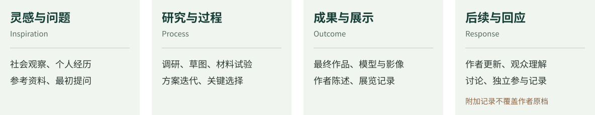
每条档案保留作者、年份、专业、主题、媒介、版本、来源和授权。过程资料按实际可得程度收录，不承诺第一天覆盖全部历届作品。现场按需召回，完整访问范围受资料和授权约束。
| 需核实的条件 | 要获得什么 | 影响哪些选择 |
|---|---|---|
| 边界、管理与保护 | 真实可用范围、管理主体与审批口径 | 能否使用现有界面、建筑或独立构件 |
| 现有建筑与开放 | 逐单元用途、时段和可进入条件 | 是否有可承接停留或深度体验的空间 |
| 通行与同等可达 | 净宽、坡度、障碍、临水关系与退出路径 | 停留、等候与服务是否妨碍公共使用 |
| 真实停留与同行行为 | 人停在哪里、如何站坐、怎样交谈 | 共同观看是否有需求，哪类条件最重要 |
| 声光与设施环境 | 反光、遮雨、噪声、网络、供电与座位 | 阅读、语音、公共界面及VR是否适配 |
| 作品与过程资料 | 可获得的资料、授权、版本和完整度 | 档案范围、AI解释与体验深度 |
| 运营与持续兴趣 | 职责、资源、更新方式及用户参与意愿 | 维护是否可承担，离场延续是否有价值 |